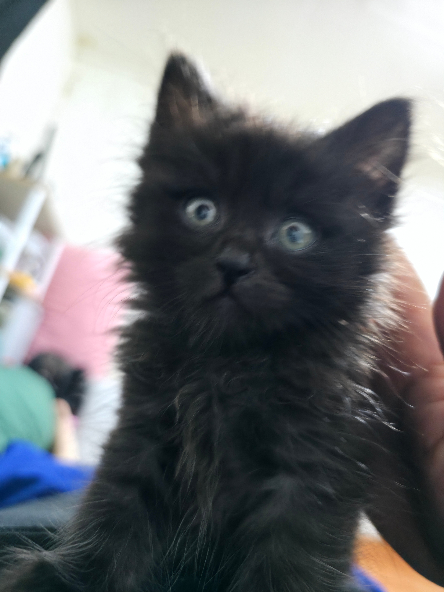
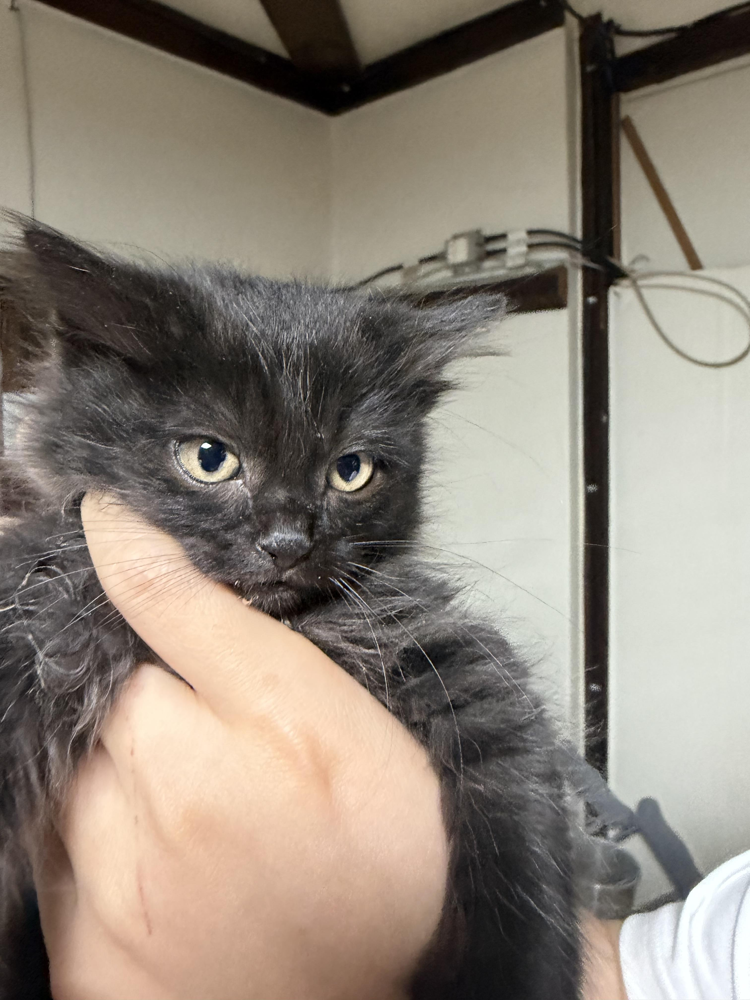
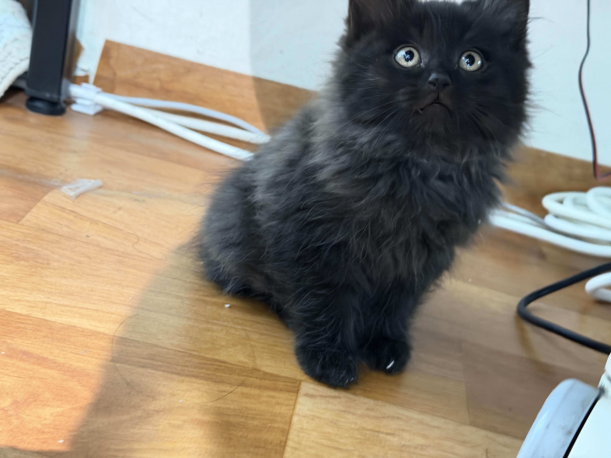
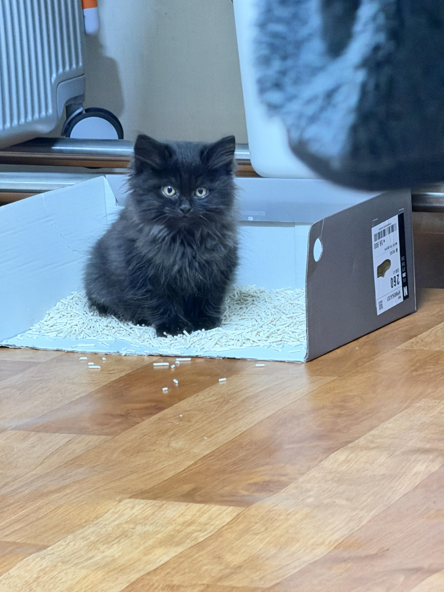
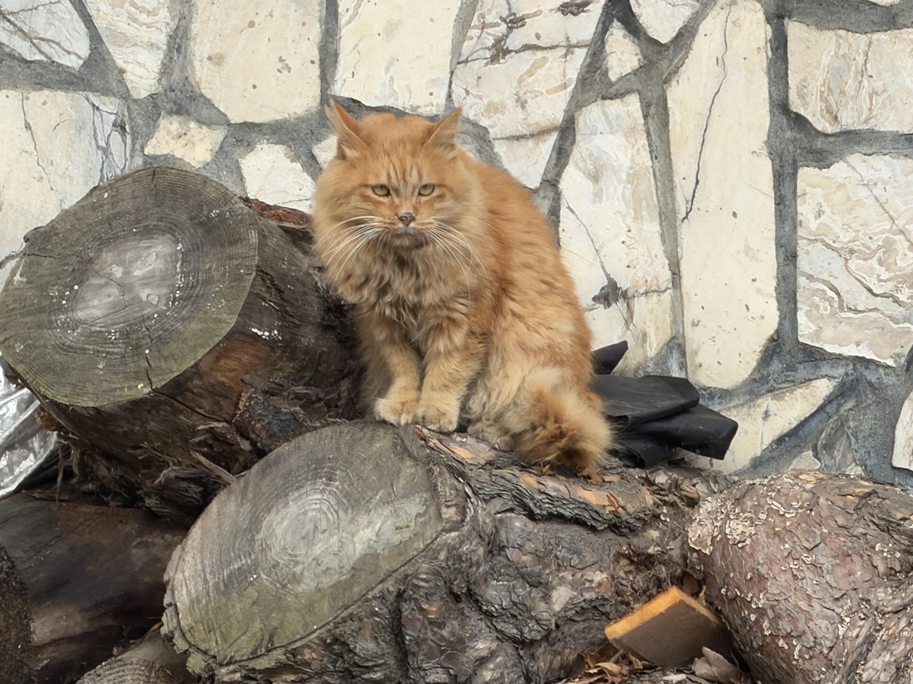

작년 6월초에 밥주는 길냥이 낳은 새끼
유기된 품종묘에서 나온애들이라 길냥이 같지않고 이쁨
와이프랑 키울려고 데려왔었는데
예방접종을 못버티고 일주일만에 고양이별로 가버림
그때 와이프도 나도 엄청 울었는데 나중에
고양이가 다시 우리한테 오면 그땐 쟤가 환생해서 오는거라 생각하고
키우자 했는데
이틀전에

똑같은애가 마당에서 혼자 울고있더라 ㅋㅋ
날도 춥고 일단 데리고 와서 밥주고 물주고 엄마한테 가라고 보냈는데
계속 숲에서 혼자 방황하길래
어제 다시 데려옴


숫컷인데 성격지랄맞으면 안키워야지 했는데 존나 순하다
하악질도 없고 만지면 바로 골골송 부르고
일단은 임보중인데 와이프가 너무 맘에 들어해서 아마 우리가
다시 키우지않을까싶기도 하고 금요일날 이사가는데
같이 가지않을까싶음 이쁘니까 뭐 분양하면 누구라도 데려가겠지

얘가 애비임 내가 케어하는데 중성화를 시켰어야했는데
데려가보니 심비대증이 있어서 마취하다 죽을확률이 높다해서
못했음 어미는 검은색 장모종임 여긴 길냥이 3마리 있는데
두마리가 장모임 그래서 새끼들이 이쁘니까
오는 손님들이 해마다 바로바로 데려감
도시였음 캣맘 헌팅 후보 1순위였다 ㄹㅇ

귀엽게 생겼네 ㅋㅋㅋ